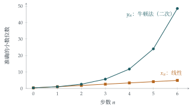

STEP II 2023，第 5 题
继续之前，请先阅读题目（原题为英文）。题目载于 OCR 提供下载的 2023 年 STEP 试卷（zip 文件）内的 STEP II 试卷： www.ocr.org.uk/Images/707102-2023-past-papers.zip
引子
有两个求 \(\sqrt2\) 近似值的简单方法，同样由 \(1\) 开始，同样只用加法、乘法和除法。十步之后，第一个方法准确至小数点后约 \(8\) 位，第二个方法则准确至超过 \(700\) 位。
两者的分别，并不在于第二个方法对付 \(\sqrt2\) 的手法较为高明，而在于误差的形态不同：第一个方法每走一步，误差乘以一个固定的分数；第二个方法每走一步，误差就被平方一次。这道题目把这一点说得精确，同时引入数值分析（numerical analysis）的一个核心概念；每一部计算机、每一次天气预报、每一个工程模拟，背后都是这门学科。
动笔之前
先以分数形式计算两个数列（sequence）的首几项。 \[x_n: \quad 1,\; \frac32,\; \frac75,\; \frac{17}{12},\; \frac{41}{29},\; \frac{99}{70},\; \ldots \qquad y_n: \quad 1,\; \frac32,\; \frac{17}{12},\; \frac{577}{408},\; \frac{665857}{470832},\; \ldots\]
你留意到这两列数有甚么特别吗？（看看哪些分数在两列中都有出现。）
每一个 \(y_n\) 都在 \(x\) 的那一列中出现，只是位置愈来愈后：\(y_2 = x_3\)，\(y_3 = x_7\)，一般而言 \(y_n = x_{2^n - 1}\)。第二个方法其实是在同一列近似值之中，以指数速度向前跳。请记住这一点，我们会在本节末解释。
逐步解题
阶段 1 第一个方法的各项不小于 1
我们可以写成 \(x_{n+1} = 1 + \dfrac{1}{x_n + 1}\)。若 \(x_n \geq 1\)，则 \(x_n + 1 > 0\)，所以 \(x_{n+1} > 1\)。由于 \(x_0 = 1\)，由归纳法（induction）可知对所有 \(n\) 都有 \(x_n \geq 1\)。■
阶段 2 第一个方法的误差
题目以 \(x_n^2 - 2\) 而不是 \(x_n - \sqrt2\) 来量度误差。试把 \(x_{n+1}^2 - 2\) 写成以 \(x_n\) 表示的单一分数。分子有甚么特别之处？
\[x_{n+1}^2 - 2 = \frac{(x_n + 2)^2 - 2(x_n + 1)^2}{(x_n + 1)^2} = \frac{x_n^2 + 4x_n + 4 - 2x_n^2 - 4x_n - 2}{(x_n + 1)^2} = \frac{2 - x_n^2}{(x_n + 1)^2}.\] 分子正好是 \(-(x_n^2 - 2)\)。所以 \(x_{n+1}^2 - 2\) 与 \(x_n^2 - 2\) 异号（近似值交替落在 \(\sqrt2\) 的两侧），而且由 \(x_n \geq 1\) 可得 \((x_n + 1)^2 \geq 4\)，因此 \[\bigl|x_{n+1}^2 - 2\bigr| = \frac{|x_n^2 - 2|}{(x_n + 1)^2} \leq \frac14\bigl|x_n^2 - 2\bigr|. \qed\]
阶段 3 十步之后
把上式连续应用十次，得 \(|x_{10}^2 - 2| \leq 4^{-10}|x_0^2 - 2| = 4^{-10} = \frac{1}{1048576} < 10^{-6}\)。至于正负号：\(x_0^2 - 2 = -1 < 0\)，而正负号逐项交替，所以对每个偶数 \(n\) 都有 \(x_n^2 - 2 < 0\)。于是 \(x_{10}^2 < 2\)，两者合起来便得 \(2 - 10^{-6} \leq x_{10}^2 \leq 2\)。■
\(x_n^2\) 的误差每一步最多乘以 \(\frac14\)。这称为线性收敛（linear convergence）：每一步增加固定数目的准确位数（这里最少是 \(\log_{10} 4 \approx 0.6\)；实际上较接近 \(0.77\)）。
阶段 4 第二个方法的误差
试把 \(y_{n+1} - \sqrt2\) 写成单一分数。分子应该会令你想起完全平方。
\[y_{n+1} - \sqrt2 = \frac{y_n^2 + 2 - 2\sqrt2\, y_n}{2y_n} = \frac{\bigl(y_n - \sqrt2\bigr)^2}{2y_n}. \qed\] 若 \(y_n > 0\)，右方为非负数，所以 \(y_{n+1} \geq \sqrt2 > 1\)。由于 \(y_0 = 1\)，由归纳法可知对所有 \(n\) 都有 \(y_n \geq 1\)。■ （事实上，对所有 \(n \geq 1\) 都有 \(y_n \geq \sqrt2\)：走完第一步之后，第二个方法永远从上方逼近 \(\sqrt2\)。）
阶段 5 把误差平方
设 \(e_n = y_n - \sqrt2\)，则当 \(n \geq 1\) 时 \(e_n \geq 0\)，而且因为 \(y_n \geq 1\)，有 \(e_{n+1} = \dfrac{e_n^2}{2y_n} \leq \dfrac{e_n^2}{2}\)。
用归纳法证明：当 \(n \geq 1\) 时 \(e_n \leq 2r^{2^n}\)，其中 \(r = \frac{\sqrt2 - 1}{2}\)。请仔细检查基础情况。
基础情况：\(e_1 = \dfrac{(1 - \sqrt2)^2}{2 \cdot 1} = \dfrac{(\sqrt2 - 1)^2}{2}\)，而 \(2r^2 = 2 \cdot \dfrac{(\sqrt2 - 1)^2}{4} = \dfrac{(\sqrt2 - 1)^2}{2}\)。两者相等，所以基础情况成立（而且是等式）。
归纳步骤：若 \(e_n \leq 2r^{2^n}\)，则 \[e_{n+1} \leq \frac{e_n^2}{2} \leq \frac{4r^{2^{n+1}}}{2} = 2r^{2^{n+1}}. \qed\]
阶段 6 六百位小数
由于 \(\sqrt2 - 1 < \frac12\)，我们有 \(r < \frac14\)，所以 \[0 \leq y_{10} - \sqrt2 \leq 2 \left(\frac14\right)^{2^{10}} = 2 \cdot 2^{-2048} = 2^{-2047}.\] 而 \(2^{10} = 1024 > 10^3\)，所以 \(2^{-2047} < 2^{-2040} = (2^{10})^{-204} < 10^{-612}\)，这当然小于 \(10^{-600}\)。■
回顾
找出误差的递推关系。两部分的做法，都是把新误差写成旧误差的一个精确函数，其余一切便随之而来。
线性与二次之别。“新误差 \(\leq\) 常数 \(\times\) 旧误差”表示每一步增加固定数目的准确位数。“新误差 \(\leq\) 常数 \(\times\) (旧误差)\(^2\)”则表示每一步令准确位数加倍（图 2.7.1）。
平方量决定正负号。在第 (ii) 部分，走一步之后的误差是一个平方数除以一个正数，所以永远不会是负数：迭代从上方逼近。
背后的数学
第二个方法其实是把牛顿法（Newton’s method）应用于 \(f(y) = y^2 - 2\)。牛顿法求 \(f\) 的根的做法，是反复把猜测值 \(y\) 换成 \(y\) 处的切线与横轴的交点： \[y_{\text{新}} = y - \frac{f(y)}{f'(y)} = y - \frac{y^2 - 2}{2y} = \frac{y^2 + 2}{2y}.\] 在单根（simple root）\(\alpha\) 附近，由泰勒展开式（Taylor expansion）可知新误差约为 \(\frac{f''(\alpha)}{2f'(\alpha)} \times (\text{旧误差})^2\)，这就是牛顿法二次收敛（quadratic convergence）的原因。这个特殊情况，即“取 \(y\) 与 \(2/y\) 的平均值”，古巴比伦人早已知道；一块约公元前 1700 年的泥板（现称为 YBC 7289）以 \(60\) 进制给出 \(\sqrt2\) 的值，误差小于百万分之一。

不动点及其收敛速度
两个方法都具有 \(u_{n+1} = g(u_n)\) 的形式，而且 \(g(\sqrt2) = \sqrt2\)，所以 \(\sqrt2\) 是一个不动点（fixed point），正如 第 2.2 节 的蛛网图（cobweb diagram）所示。在不动点 \(\alpha\) 附近，误差每一步大约乘以 \(g'(\alpha)\)。对第一个方法而言，\(g(x) = \frac{x+2}{x+1}\)，而 \(g'(\sqrt2) = -\frac{1}{(\sqrt2+1)^2} = -(3 - 2\sqrt2) \approx -0.17\)：负号解释了正负号为何交替，\(0.17\) 则解释了每一步为何增加 \(0.77\) 位（\(\log_{10}(1/0.17) \approx 0.77\)）。对牛顿法而言，\(g'(\alpha) = 0\)，所以线性项消失，误差由下一项（即平方项）决定。设计出满足 \(g'(\alpha) = 0\) 的迭代（iteration），正是快速数值方法的精髓所在。
为何出现相同的分数
分数 \(x_n = p_n/q_n\) 满足 \(p_{n+1} = p_n + 2q_n\) 和 \(q_{n+1} = p_n + q_n\)，并且 \(p_n^2 - 2q_n^2 = \pm 1\)，正负交替。它们是佩尔方程（Pell’s equation）\(p^2 - 2q^2 = \pm1\) 的解，也是连分数（continued fraction）\(\sqrt2 = [1; 2, 2, 2, \ldots]\) 的渐近分数（convergents）。它们来自 \(1 + \sqrt2\) 的幂：\(p_n + q_n\sqrt2 = (1 + \sqrt2)^{n+1}\)。牛顿法的每一步把 \(p + q\sqrt2\) 平方（不妨一试：\((p + q\sqrt2)^2 = p^2 + 2q^2 + 2pq\sqrt2\)，而 \(\frac{p^2 + 2q^2}{2pq}\) 正是把牛顿法的公式应用于 \(p/q\) 的结果）。平方令指数加倍，这就是 \(y_n = x_{2^n - 1}\) 的原因。同样的“平方”模式，也是 第 2.8 节 中迭代的动力来源。
思维技巧
要了解一个近似方法的表现，就写下某一步的误差如何取决于上一步的误差。
这是数值分析的起点。两个方法的答案本身（\(\sqrt2\)）是一样的；不同之处，亦是实际应用中最要紧之处，在于误差如何演变。
延伸练习
佩尔方程。证明：若 \(y_n = p/q\) 为最简分数，且 \(p^2 - 2q^2 = 1\)，则 \(y_{n+1} = \dfrac{p^2 + 2q^2}{2pq}\) 亦满足这个方程。验证 \(577^2 - 2 \times 408^2 = 1\)。
立方根。写出应用于 \(f(y) = y^3 - 2\) 的牛顿法，并证明新误差为 \(\dfrac{(y_n - \alpha)^2 (2y_n + \alpha)}{3y_n^2}\)，其中 \(\alpha = \sqrt[3]2\)。由此推出：若 \(y_n > \alpha\)，则新误差最多是旧误差平方的 \(\frac{1}{\alpha}\) 倍。（提示：利用 \(\alpha^3 = 2\)。）
不用除法的除法。证明应用于 \(f(y) = \frac1y - a\) 的牛顿法给出 \(y_{n+1} = y_n(2 - a y_n)\)，当中无需除法。若 \(e_n = 1 - a y_n\)，证明 \(e_{n+1} = e_n^2\)。（电脑处理器正是用这类迭代来做除法的。）
牛顿法失效的时候。把牛顿法应用于 \(f(y) = y^{1/3}\)，它唯一的根是 \(0\)。证明无论从哪里开始，每一步都令与根的距离加倍。误差公式的哪一个假设不成立？
延伸阅读
Endre Süli & David Mayers, An Introduction to Numerical Analysis（Cambridge University Press）。标准的大学本科数值分析教科书；第 1 章讲述不动点迭代和牛顿法。
Nick Higham (ed.), The Princeton Companion to Applied Mathematics（Princeton University Press）。收录有关牛顿法和数值分析的短文，由专家执笔，面向广大读者。
David Fowler & Eleanor Robson, “Square root approximations in Old Babylonian mathematics: YBC 7289 in context”（古巴比伦数学中的平方根近似值），Historia Mathematica 25 (1998)。